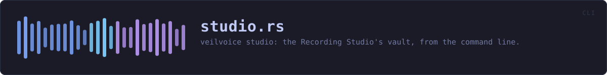

crates/veilvoice-cli/src/studio.rs
veilvoice-cli · 299 lines · read the source here · or on GitHub
veilvoice studio: the Recording Studio's vault, from the command line.
The window's Browser lists, plays and exports what the Recording Studio keeps. This reaches the same vault through the same code, so a machine with no display, or somebody who would rather type, can reach it too. F-339: until this, the vault had no command at all.
It asks for the two passphrases the window asks for: the app lock's, then the recording passphrase. The app lock is checked the way the window checks it, through the decoy store, so the decoy passphrase opens an empty studio here exactly as it does there, and takes the same time to do it.
It never makes a vault. The window makes one the first time it records, and asking about an empty folder here says so and leaves the folder empty.
WHAT THIS FILE CONTAINS
299 lines defining 9 functions (1 public), 1 type and 1 constant. Everything below is read out of the source, so it cannot disagree with the code.
The types it owns.
enum Actionline 26 · What to do with the vault.
What happens when it runs. These are the ways in: public, and nothing else in this file calls them, so they are what an outside caller reaches first.
runline 59 · Run one action.
reachesexport_to,find,list,no_such,open,day,size,open_with
WHAT CALLS WHAT
The functions this file defines, and the calls between them. An edge means the callee's name appears, called, inside the caller's body. This is a syntactic reading, not a type-resolved one.
The same graph as Mermaid source
%%{init: {"theme":"base","themeVariables":{"background":"#1a1b26","primaryColor":"#1f2335","primaryTextColor":"#c0caf5","primaryBorderColor":"#7aa2f7","secondaryColor":"#16161e","tertiaryColor":"#16161e","lineColor":"#737aa2","textColor":"#c0caf5","mainBkg":"#1f2335","nodeBorder":"#7aa2f7","clusterBkg":"#16161e","clusterBorder":"#2f3549","fontFamily":"ui-monospace, SFMono-Regular, Consolas, monospace","fontSize":"14px"}}}%%
flowchart TD
n_run(["run<br/>line 59"])
n_open["open<br/>line 112"]
n_open_with["open_with<br/>line 150"]
n_list["list<br/>line 164"]
n_find["find<br/>line 182"]
n_no_such["no_such<br/>line 192"]
n_export_to["export_to<br/>line 198"]
n_day["day<br/>line 205"]
n_size["size<br/>line 221"]
n_find --> n_no_such
n_list --> n_day
n_list --> n_size
n_open --> n_open_with
n_run --> n_export_to
n_run --> n_find
n_run --> n_list
n_run --> n_no_such
n_run --> n_open
click n_run href "https://github.com/tilas01/veilvoice/blob/main/crates/veilvoice-cli/src/studio.rs#L59" "open the source"
click n_open href "https://github.com/tilas01/veilvoice/blob/main/crates/veilvoice-cli/src/studio.rs#L112" "open the source"
click n_open_with href "https://github.com/tilas01/veilvoice/blob/main/crates/veilvoice-cli/src/studio.rs#L150" "open the source"
click n_list href "https://github.com/tilas01/veilvoice/blob/main/crates/veilvoice-cli/src/studio.rs#L164" "open the source"
click n_find href "https://github.com/tilas01/veilvoice/blob/main/crates/veilvoice-cli/src/studio.rs#L182" "open the source"
click n_no_such href "https://github.com/tilas01/veilvoice/blob/main/crates/veilvoice-cli/src/studio.rs#L192" "open the source"
click n_export_to href "https://github.com/tilas01/veilvoice/blob/main/crates/veilvoice-cli/src/studio.rs#L198" "open the source"
click n_day href "https://github.com/tilas01/veilvoice/blob/main/crates/veilvoice-cli/src/studio.rs#L205" "open the source"
click n_size href "https://github.com/tilas01/veilvoice/blob/main/crates/veilvoice-cli/src/studio.rs#L221" "open the source"
classDef entry fill:#1f2335,stroke:#7aa2f7,color:#c0caf5
class n_run entry
classDef helper fill:#1f2335,stroke:#bb9af7,color:#c0caf5
class n_open,n_open_with,n_list,n_find,n_no_such,n_export_to,n_day,n_size helper
subgraph chart_key ["Key"]
direction LR
key_entry["entry: a way in: public, and nothing in this file calls it"]
key_helper["helper: private to this file"]
end
class key_entry entry
class key_helper helperThis site loads no third-party script, so it cannot run Mermaid; the diagram above is the same nodes and edges drawn by the generator instead. GitHub renders the source below directly.
ITEMS
| Item | Line | Documentation |
|---|---|---|
Action pub enum | 26 | What to do with the vault. |
WRONG_PAIR const | 54 | What the window says when the pair of passphrases does not open the vault. |
run pub fn | 59 | Run one action. |
open fn | 112 | Check the app lock and open the vault, or None for an empty studio. |
open_with fn | 150 | Open the vault under parent with the two passphrases, never making one. |
list fn | 164 | Print what the vault holds. |
find fn | 182 | The entry whose id is id. |
no_such fn | 192 | What is said for an id the vault does not hold, decoy or not. |
export_to fn | 198 | Write one recording to path, owner-only, and never over a file that is already there. |
day fn | 205 | A Unix time as the day it fell on, in UTC. |
size fn | 221 | A byte count the way a person reads one. |